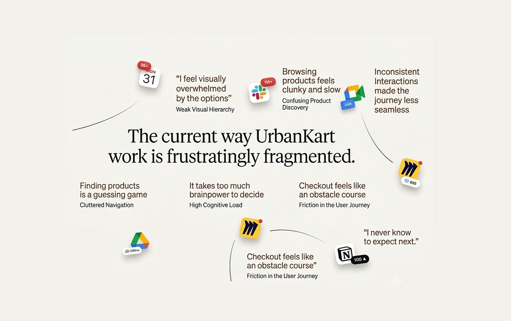
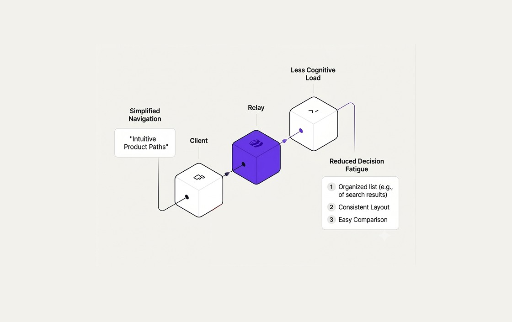
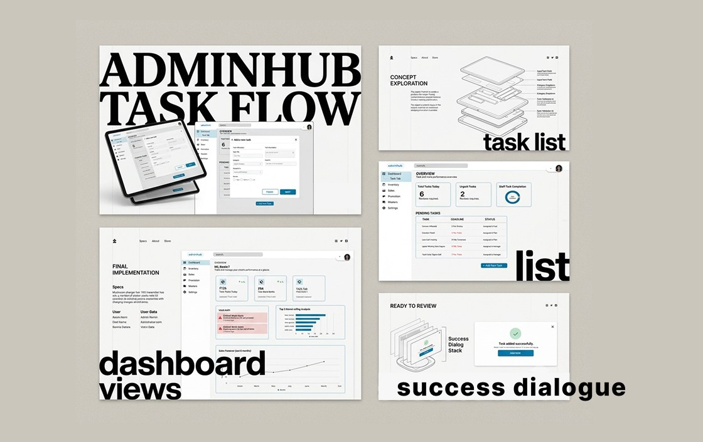

UrbanKart
The project focused on creating a cohesive and scalable interface that helps store and regional managers efficiently track sales, manage inventory, and oversee daily operations through a clear and user-friendly dashboard experience.
Retail Sales and Inventory Dashboard
UrbanKart operates across multiple retail outlets where store and regional managers are responsible for tracking sales, managing inventory, and coordinating daily store operations.
These tasks are currently handled through a mix of POS systems, spreadsheets, and manual communication with warehouse and staff. Due to limited real-time visibility and scattered information, managers often spend extra time verifying data, identifying stock issues, and aligning team actions, which affects overall efficiency and store performance.
What I Did in This Project
Managers face challenges due to scattered data, delayed updates, and lack of real-time visibility across sales, inventory, and tasks. This results in slow decision-making, missed stock issues, and inconsistent task execution. The absence of a centralized system makes it difficult to maintain smooth and efficient store operations.
Unifying Critical Real-Time Data
To design an intuitive and visually consistent dashboard that brings together key retail data into one platform. The goal was to improve usability, provide real-time insights, and enable managers to quickly monitor performance, manage tasks, and take informed actions without relying on multiple disconnected systems.
5-Step Design Process
1. Mapping Everyday Store Challenges
Focused on real situations where managers struggle like tracking stock, managing tasks, and handling delays.
2. Filtering What Actually Matters
Identified the most critical information needed for quick decisions instead of showing excessive data.
3. Designing for Quick Understanding
Organized content so managers can grasp insights instantly without spending time reading or searching.
4. Building a Cohesive System
Created a consistent visual language to keep the interface simple, scalable, and easy to use.
5. Making Data Actionable
Designed each section to lead to a clear action, such as restocking, assigning tasks, or reviewing performance.



Major Learnings
- ✦ Clarity and simplicity make data easier to act on.
- ✦ Consistent design systems improve usability.
- ✦ Data is valuable only when it drives decisions.